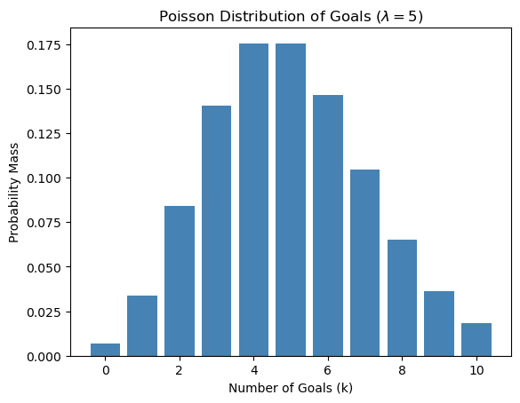
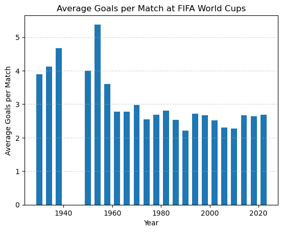
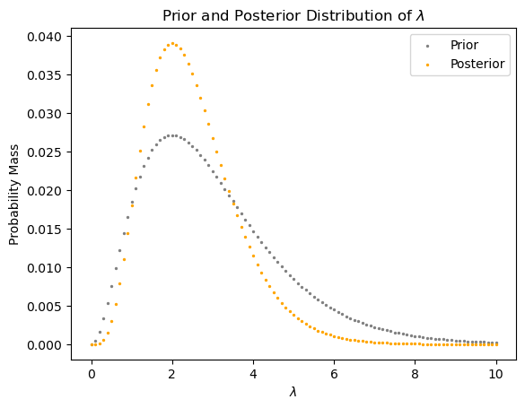
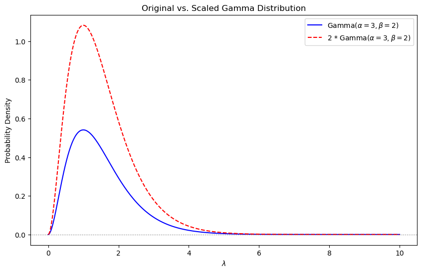
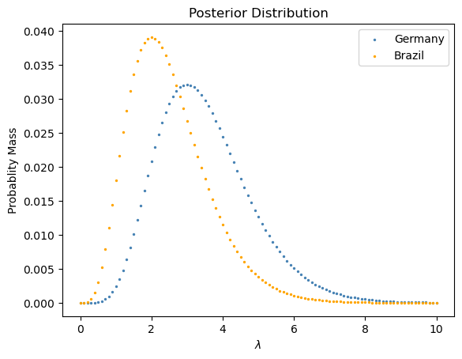
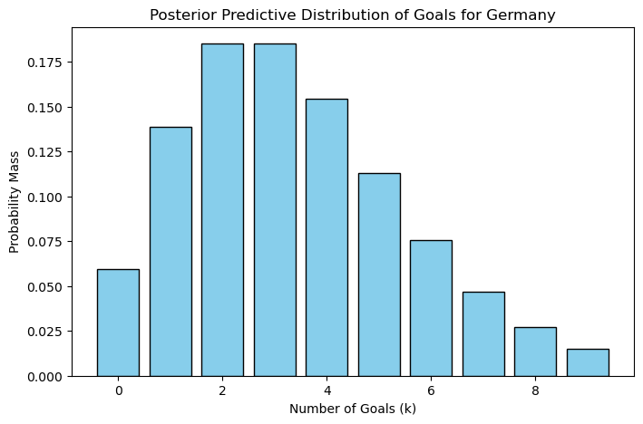
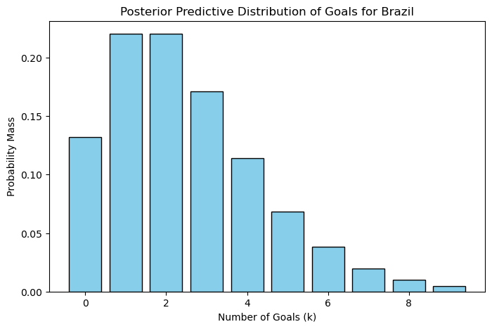

from scipy.stats import poisson
import numpy as np
import matplotlib.pyplot as plt
import pandas as pd
def normalize_array(arr):
return np.array([i/np.sum(arr) for i in arr])
lam = 5
dist = poisson(lam)
pmfs = [dist.pmf(i) for i in range(11)]7 泊松过程
7.1 Gamma 分布
首先，我建议大家把我在博客讲过的 离散分布先理解透，特别是泊松分布那一部分。
在泊松分布中我们讲到这样一个问题：
中国男足队平均每场比赛进 5 个球 (请允许我在平行宇宙做一次梦)，请问下一场比赛中国进 2 个球的概率是多少
我们用泊松分布模拟了中国队进 0-10 个球的概率：
\[ P(X = k) = \frac{\lambda^k \cdot e^{-\lambda}}{k!} \tag{7.1}\]
Code
x_axis = range(11)
plt.bar(x_axis, pmfs, color='steelblue', label=r'Poisson distribution with `$\lambda=5$`')
plt.xlabel("Number of Goals (k)")
plt.ylabel("Probability Mass")
plt.title(f"Poisson Distribution of Goals ($\lambda=5$)")Text(0.5, 1.0, 'Poisson Distribution of Goals ($\\lambda=5$)')
使用泊松分布，我们可以由 \(\lambda\) 得知 \(p(k)\)，也就是 \(P(k|\lambda)\)。那现在的问题是，我们如何求 \(P(\lambda | k)\):
中国队在一场球赛中进了 2 个球 (\(k=2\))，请问中国队平常一般进多少个球 (\(\lambda\))？
根据贝叶斯定理：
\[ P(\lambda | k) = \frac{P(\lambda) P(k|\lambda)}{P(k)} \tag{7.2}\]
这里
- \(k\) 是数据
- \(\lambda\) 是假设
- \(P(\lambda)\) 是先验概率
- \(P(k|\lambda)\) 是似然
我们可以先忽略 \(P(k)\)，因为它只是为了让最后的结果之和为 1。
Tip
为什么我们可以忽略 \(P(k)\) 呢？因为它是一个常量：
\[ P(k) = \sum_{\lambda} P(k|\lambda) \cdot P(\lambda) \]
我们最后让 posteior 和为一的时候，也是要对所有的结果乘上一个常量。那我们最后再做就好，没有必要这时候乘。
\(P(k|\lambda)\) 可以通过泊松分布来求得。现在比较难弄的是 \(P(\lambda)\)，也就是我们还没看任何数据时对球队一般进球的预估。
我们用 FIFA 的数据 (世界杯场均进分数据)：
df = pd.read_csv('public/data/fifa.csv')
df.head()| year | lam | |
|---|---|---|
| 0 | 1930 | 3.89 |
| 1 | 1934 | 4.12 |
| 2 | 1938 | 4.67 |
| 3 | 1950 | 4.00 |
| 4 | 1954 | 5.38 |
Code
plt.bar(df.year, df.lam, width=2.5)
plt.xlabel("Year")
plt.ylabel("Average Goals per Match")
plt.title("Average Goals per Match at FIFA World Cups")
plt.grid(axis='y', linestyle='--', alpha=0.5)
plt.show()
np.mean(df.lam)3.065909090909091我们看到一场球平均进 3 个球。那我们大概就有数了。但是 Prior 不能只是一个数，需要是一个分布，我们用 Gamma 分布来模拟。该分布有两个变量：\(\alpha\) (shape) 和 \(\beta\) (rate)。该分布的平均值为 \(\frac{\alpha}{\beta}\)，Probability Density Function (PDF) 是
\[ f(x) = \frac{\beta^{\alpha}}{\Gamma(\alpha)} x^{\alpha - 1} e^{-\beta x} \tag{7.3}\]
其中
\[ x \in (0, \infty) \]
其中 \(\Gamma(\alpha)\) 的定义是：
\[ \Gamma(\alpha) = \int_0^{\infty} x^{\alpha - 1} e^{-x} \, dx \]
\(\Gamma(\alpha)\) 其实是连乘 (factorial) 在非整数中的应用。如果 \(n\) 是整数，那
\[\Gamma(n) = (n - 1)!\]
如果是非整数，比如 \(0.5\)，那就需要用上面的那个普遍公式。
为什么用 Gamma 分布？
- 因为它的自变量是从 0 开始的。
- 如果我们把 \(\beta\) 预设为 1，那么就只剩下一个变量 \(\alpha\)，这个就是上面算出来的 3 个球。
- 结果符合现实情况。
所以以下就是 Prior:
from scipy.stats import gamma
alpha_prior = 3
# assume it is almost impossible to score more than 10
lambdas = np.linspace(0, 10, 101)
delta_lambda = lambdas[1] - lambdas[0]
# probability mass function
prior_pmf = gamma(alpha_prior).pdf(lambdas)*delta_lambda
# normalize the prior for visualization purposes
# note that the posterior is the same whether we normalize prior or not
prior_pmf = normalize_array(prior_pmf)
Tip
注意，gamma(alpha_prior).pdf(lambdas) 算的是 PDF，要乘以间隔才是 PMF (probability mass function)。
np.sum(prior_pmf)0.9999999999999997Likelihood，也就是已知 \(\lambda\) 求 \(k\):
k = 2
likelihood_pmf = poisson(lambdas).pmf(k)
likelihood_pmf[0:5]array([0. , 0.00452419, 0.01637462, 0.03333682, 0.0536256 ])那求 Posterior 就是 Prior 和 Likelihood 这两个数列逐元素相乘，然后让最后的结果之和为1就可以：
posterior = normalize_array(prior_pmf * likelihood_pmf)Code
plt.scatter(x = lambdas,
y = prior_pmf,
s = 2,
color="grey",
label="Prior")
plt.scatter(x = lambdas,
y = posterior,
s = 2,
color = "orange",
label="Posterior")
plt.xlabel(r"$\lambda$")
plt.ylabel("Probability Mass")
plt.legend()
plt.title(r"Prior and Posterior Distribution of $\lambda$")Text(0.5, 1.0, 'Prior and Posterior Distribution of $\\lambda$')
7.2 Probability of Superiority
德国男足最近的一场比赛射进 4 个球，巴西队最近一场比赛射进 2 个球。我们有多大信心说德国男足更强？
我们首先要把各自队的 posterior 求出来：
def get_posterior_pmf(lambdas, k, prior_pmf):
likelihood_pmf = poisson(lambdas).pmf(k)
posterior = normalize_array(
prior_pmf * likelihood_pmf)
return posteriorge_posterior_pmf = get_posterior_pmf(lambdas, 4, prior_pmf)
br_posterior_pmf = get_posterior_pmf(lambdas, 2, prior_pmf)Code
plt.scatter(x = lambdas,
y = ge_posterior_pmf,
s = 2,
color="steelblue",
label="Germany")
plt.scatter(x = lambdas,
y = br_posterior_pmf,
s = 2,
color = "orange",
label="Brazil")
plt.xlabel(r"$\lambda$")
plt.ylabel("Probability Mass")
plt.legend()
plt.title(r"Posterior Distribution")Text(0.5, 1.0, 'Posterior Distribution')这里 \(\lambda\) 所代表的是一个国家队平均而言每场得多少分。
总体思路是这样：德国队随机一个 \(\lambda\)，巴西队也随机选一个，德国对应的 \(\lambda\) 比巴西的大的概率。
算法如下：
\[ P(\lambda_{\text{Germany}} > \lambda_{\text{Brazil}}) = \sum_{\lambda_{\text{Germany}}} \sum_{\lambda_{\text{Brazil}}} P(\lambda_{\text{Germany}}) \cdot P(\lambda_{\text{Brazil}}) \cdot \mathbb{I}(\lambda_{\text{Germany}} > \lambda_{\text{Brazil}}) \]
其中 \(\mathbb{I}(\lambda_{\text{Germany}} > \lambda_{\text{Brazil}})\) 是 Indicator function，如果 \(\lambda_{\text{Germany}} > \lambda_{\text{Brazil}}\) 则 \(\mathbb{I}(\lambda_{\text{Germany}} > \lambda_{\text{Brazil}}) = 1\)，反之则为 0。
total = 0
for i, lam_ge in enumerate(lambdas):
for j, lam_br in enumerate(lambdas):
if lam_ge > lam_br:
total += ge_posterior_pmf[i] * br_posterior_pmf[j]
total0.7152072603914539
Tip
想一下下面这个想法为什么是错的：
sum = 0
for i, lam in enumerate(lambdas):
if ge_posterior_pmf[i] > br_posterior_pmf[i]:
sum += 17.3 Conjugate Priors
我们来讲一个很重要的概念：Conjugate priors，中文翻译成「共轭先验」。其所表达的意思是：Posterior Distribution 和 Prior Distribution 同属于一个 Distribution。因为我们的 prior 是 gamma distribution，那 posterior 也是，只是 shape (alpha) 和 rate (beta) 不同。
我们具体来看一下。
在公式 Equation 7.2 中，求先验概率 \(P(\lambda)\) 我们需要用到 Equation 7.3，只需要把 \(x\) 换成 \(\lambda\) 就可以。求似然 \(P(k|\lambda)\) 我们用到 Equation 7.1。
那 \(P(\lambda) P(k|\lambda)\) 就是代入具体的 \(\lambda\)，把 Equation 7.3 和 Equation 7.1 相乘即可。
相乘的结果是：
\[ \frac{\lambda^k \cdot e^{-\lambda}}{k!} \cdot \frac{\beta^{\alpha}}{\Gamma(\alpha)} \lambda^{\alpha - 1} e^{-\beta \lambda} = \frac{\beta^\alpha}{\Gamma(\alpha) k!} \cdot \lambda^{(\alpha + k) - 1} e^{-(\beta + 1) \lambda} \tag{7.4}\]
\(\frac{\beta^{\alpha}}{\Gamma(\alpha)}\) 是一个常数，\(k!\) 也是一个常数。
有这样一个知识：对于一个 Gamma 函数 \(\Gamma(\alpha, \frac{1}{\beta})\)，曲线下的面积（即分布的积分）为 1。 如果乘上一个常数，比如 \(2 \cdot \Gamma(\alpha, \frac{1}{\beta})\)，该分布的形状保持不变，但曲线下的面积不再是 1，而是变为该常数的值。
Code
alpha_0 = 3
beta_0 = 2
x = np.linspace(0, 10, 500)
gamma_pdf = gamma.pdf(x, alpha_0, scale = 1/beta_0)
scaled_gamma_pdf = 2 * gamma_pdf
plt.figure(figsize=(10, 6))
plt.plot(x, gamma_pdf, label='Gamma($\\alpha=3, \\beta=2$)', color='blue')
plt.plot(x, scaled_gamma_pdf,
label='2 * Gamma($\\alpha=3, \\beta=2$)',
color='red',
linestyle='--')
plt.axhline(0, color='gray', linestyle=':', linewidth=1)
plt.xlabel('$\\lambda$')
plt.ylabel('Probability Density')
plt.title('Original vs. Scaled Gamma Distribution')
plt.legend()
plt.show()
那我们就可以理解，在 Gamma 分布中，\(\frac{\beta^{\alpha}}{\Gamma(\alpha)}\) 的作用就是让积分为 1。
为了得到 Posterior distribution, 我们要把所有的 \(\lambda\) 代入 Equation 7.4，得到一串数字，最后我们要确保它们的和为 1。因此，虽然公式 Equation 7.4 中 和 Gamma 函数的不一样，但这个不重要，最后确保和为 1 的时候，它自动就变成了它该有的样子。
因此我们就可以这么说：Posterior Distribution 也是一个 Gamma Distribution，其参数现在变成了 \(\alpha + k\) 和 \(\beta + 1\)：
\[\lambda | k \sim \text{Gamma}(\alpha + k, \beta + 1)\]
代码：
def get_posterior_pmf_conjugate_prior(alpha_prior, beta_prior, k, lambdas):
"""Get posterior pmf through conjugate prior
"""
delta_lambda = lambdas[1] - lambdas[0]
alpha_post = alpha_prior + k
beta_post = beta_prior + 1
posterior_pdf = gamma(alpha_post, scale=1/beta_post).pdf(lambdas)
posterior_pmf = posterior_pdf*delta_lambda
posterior_pmf = normalize_array(posterior_pmf)
return posterior_pmfge_posterior_pmf = get_posterior_pmf_conjugate_prior(
alpha_prior, 1, 4, lambdas)
br_posterior_pmf = get_posterior_pmf_conjugate_prior(
alpha_prior, 1, 2, lambdas)Code
plt.scatter(x = lambdas,
y = ge_posterior_pmf,
s = 2,
color="steelblue",
label="Germany")
plt.scatter(x = lambdas,
y = br_posterior_pmf,
s = 2,
color = "orange",
label="Brazil")
plt.xlabel(r"$\lambda$")
plt.ylabel("Probablity Mass")
plt.legend()
plt.title(r"Posterior Distribution")Text(0.5, 1.0, 'Posterior Distribution')
我们看到这个结果和我们通过常规的 Prior 与 Likelihood 相乘所得到的结果是一样的。
7.4 后验预测分布
我们来讲一下 Posterior predictive distribution (后验预测分布)。
我们看到 Posterior distribution 中，X 轴是 \(\lambda\)，其含义是平均而言。比如说，\(\lambda = 5\) 代表的意思是这个球队如果比赛无数次，平均下来每场会进 5 个球。
回到刚才的德国和巴西男足的叙事，我们现在如果问：
两队现在马上要进行一场比赛，请问德国对获胜的概率是多少？
请注意，我们现在已经不再是问 \(\lambda\)，而是问具体的一场比赛中每队的进球数，也就是 \(k\)。
还记得我们上面提到的吗？
\[ P(k) = \sum_{\lambda} P(k|\lambda) \cdot P(\lambda) \]
这里 \(P(\lambda)\) 是 posterior distribution，\(P(k|\lambda)\) 是泊松分布。
def post_predictive_dist(lambdas, posterior_pmfs):
"""compute posterior predictive distribution
Inputs:
- lambdas: an numpy array
- posterior_pmfs: a numpy array
Output:
- res: a dic where key is k and value is P(k)
"""
goals = range(int(max(lambdas)))
res = {}
for goal in goals:
total = 0
for i, lam in enumerate(lambdas):
poisson_pmf = poisson(lam).pmf(goal)
posterior_pmf = posterior_pmfs[i]
total += poisson_pmf * posterior_pmf
res[goal] = total
normalized_values = normalize_array(np.array(list(res.values())))
for i, pair in enumerate(res):
res[i] = normalized_values[i]
return resge_res = post_predictive_dist(lambdas, ge_posterior_pmf)
br_res = post_predictive_dist(lambdas, br_posterior_pmf)sum(ge_res.values())1.0Code
def plot_post_pred_dist(res, cntry_name):
gaols = list(res.keys())
probs = list(res.values())
plt.figure(figsize=(8,5))
plt.bar(gaols, probs, color="skyblue", edgecolor='black')
plt.xlabel("Number of Goals (k)")
plt.ylabel("Probability Mass")
plt.title(f"Posterior Predictive Distribution of Goals for {cntry_name}")
plt.show()plot_post_pred_dist(ge_res, 'Germany')
plot_post_pred_dist(br_res, 'Brazil')
下面我们计算一下在下一场比赛中德国队获胜的概率。
总体思路是这样：德国队随机一个 \(k\)，巴西队也随机选一个，德国对应的 \(k\) 比巴西的大的概率。
算法如下：
\[ P(k_{\text{Germany}} > k_{\text{Brazil}}) = \sum_{k} P(k_{\text{Germany}}) \cdot P(k_{\text{Brazil}}) \cdot \mathbb{I}(k_{\text{Germany}} > k_{\text{Brazil}}) \]
def prob_win(res1, res2):
win_prob = 0
goals = list(res1.keys())
for goal1 in goals:
for goal2 in goals:
if goal1 > goal2:
win_prob += res1[goal1] * res2[goal2]
return win_probprob_win(ge_res, br_res)0.5582596630665152